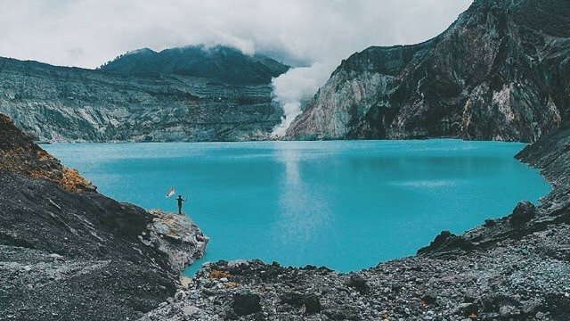

Kawah Ijen
Dataran tinggi Ijen, atau yang lebih dikenal dengan ‘Kawah Ijen’ sangat direkomendasikan untuk dikunjungi, terutama bagi para penggemar dan pendaki gunung. Dataran tinggi ini merupakan kawah aktif yang berukuran sangat besar dengan luas 134 kilometer persegi. Ijen merupakan gunung berapi yang tenang namun aktif dengan bentang alam yang didominasi oleh puncak gunung berapi Ijen (2.368 dpl), Merapi (2.800 mdpl) di sisi timur laut dari dataran ini, dan Raung (3.332 mdpl) di sudut barat daya. Vent pada gunung berapi merupakan sumber belerang untuk mengumpulkannya, para pekerja membuat jalur menuju kawah dan turun ke danau, setiap hari.
Kawasan Wisata Kawah Ijen masuk dalam wilayah Cagar Alam Taman Wisata Ijen dengan luas 2.560 hektare, termasuk hutan wisata seluas 92 hektare. Kawah Ijen ini terletak di puncak Gunung Ijen di wilayah Kecamatan Licin, Kabupaten Banyuwangi dan Kecamatan Klobang, Kabupaten Bondowoso. Gunung Ijen merupakan gunung berapi aktif yang memiliki ketinggian 2.443 mdpl diatas permukaan laut yang terletak berdampingan dengan Gunung Raung dan Gunung Merapi.
Kawah Ijen merupakan sebuah danau di atas Gunung Ijen yang terbentuk akibat proses letusan Gunung Ijen, membuat kawah tersebut dipenuhi oleh air sehingga membentuk sebuah danau kawah yang sangat menakjubkan.Yang menarik adalah kawah ini berada di tengah kaldera yang terluas di Pulau Jawa dengan diameter 6 km. Ukuran kawahnya sendiri sekitar 960 meter x 600 meter dengan kedalaman 200 meter. Kawah ini terletak di kedalaman lebih dari 300 meter di bawah dinding kaldera.
Pesona Keindahan Kawah Ijen
Selain itu fenomena alam lain yang terdapat di kawah Ijen yang tidak boleh dilewatkan adalah Blue Fire atau Api Biru, yang muncul di tengah-tengah penambangan sulphur, dan hanya bisa dilihat pada dini hari hingga menjelang pagi hari sekitar pukul 05.00 WIB. Fenomena blue fire ini hanya ada dua di dunia, selain di Ijen hanya ada di Islandia. Maka tak heran keberadaan si api biru ini begitu sangat diburu para wisatawan, khususnya turis asing.
Ombak di Pulau merah cukup menantang sehingga sangat ideal untuk digunakan berselancar (surfing) untuk para pecinta olah raga air yang satu ini. Bagaimana tidak? Ombak di pantai ini mempunyai tinggi rata-rata berkisar antara 3 sampai 5 meter sehingga sangat cocok digunakan untuk olahraga selancar (surfing) bagi peselancar pemula, amatir dan profesional.